Grafana Guide: Silence, Schedule and Review Alerts
|
This content was generated with the assistance of AI and should be verified against the official documentation before being relied on in production. |
Checked on 2026-11-11 against Grafana 13.3.x.
What you build
You keep the rule Guide high 5xx ratio running but stop its notifications in two ways: a one-off silence for 30 minutes and a recurring time interval guide-quiet-hours attached to the route of your notification policy tree. You then review what happened in the alert state history, show the rule on the dashboard Bookshelf (guides) with an alert list panel, and record the request rate by status as a new metric with a Grafana-managed recording rule.
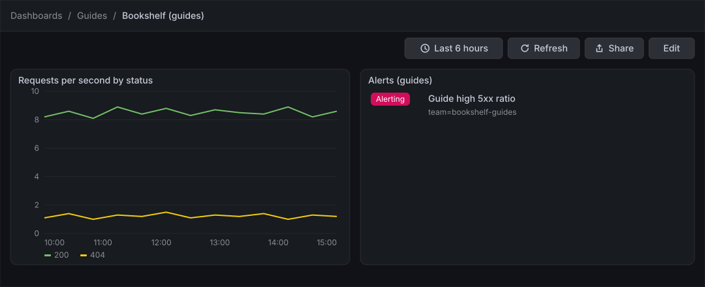
Before you start
-
Start the Grafana profile of the hands-on lab and wait about a minute:
cd lab docker compose --profile grafana up -d -
Open http://localhost:3000, sign in as
adminwith the passwordadmin, and click Skip when Grafana 13.3 asks you to update the default password. -
Do the previous guides: Create an alert rule (the rule Guide high 5xx ratio in the evaluation group
guide-eval), Send notifications (the contact point guide-webhook and the tree guide-tree with the routeteam = bookshelf-guides) and Create a dashboard and the first panel (the dashboard Bookshelf (guides)). -
The lab provisions a policy tree, a time interval and rules that Grafana shows read-only. Everything you create here is new and prefixed
guide. -
The recording rule writes to the lab’s Prometheus, which accepts remote write. The lab sets it up; you do not have to change anything.
-
The guide was checked on Grafana Enterprise 13.3.0 (the free image, no licence key). Notification and rule resources need the Editor or Admin role;
adminhas it. -
The figures are drawings of the Grafana 13.3 user interface, not screenshots, so small details can differ from your screen. A highlighted box with a number marks the control of the step with the same number. Where a form was not read in the lab (the route form, the recording rule form, the dashboard steps of the alert list), the figure shows the values and plain captions, and the step names the control by its function.
Steps
The rule page and the list of rules are the screens of the guide Create an alert rule; the dashboard and panel editor are those of Create a dashboard and the first panel.
Silence a firing alert
-
Force the failure and wait about two minutes, until the rule is Firing:
curl -X POST localhost:8090/mode/failing -
In Alerting → Alert rules, open the rule Guide high 5xx ratio in the folder Guides, evaluation group
guide-eval.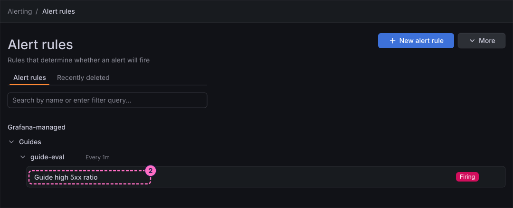
-
Open the Instances tab.
-
In the row of the firing instance, click Silence, in the Destination column.
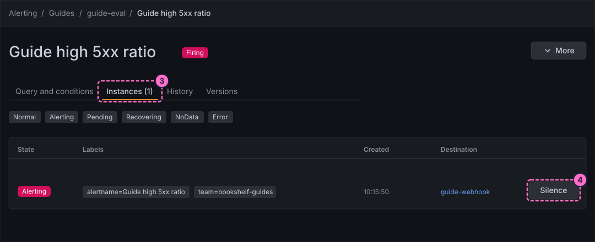
-
In the form Silence alert rule, which opens with the labels of the instance already filled in, type
30min Duration. Silence start and end changes to match. -
Type
Guide: planned testin Comment. -
Click Save silence.
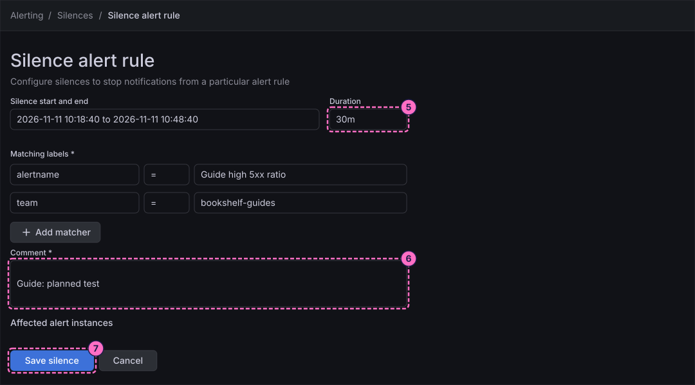
Mute a policy on a schedule
-
In Alerting → Notification configuration, open the Time intervals tab and click the button that creates a new time interval. The form is titled New time interval.
-
In Name, type
guide-quiet-hours. -
Under Time intervals → Time range, type a Start time a few minutes before now, for example
10:00. -
Type an End time after now, for example
12:00. -
In Location, type
UTC, so that the window uses the same clock as the receiver output, and take your start and end times from the current UTC time. -
Click Save time interval.
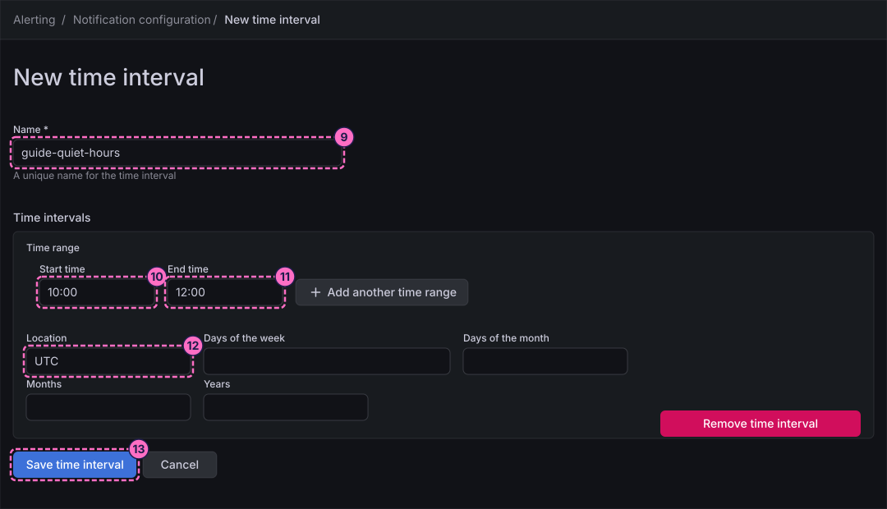
-
Open the Notification policies tab. In the tree guide-tree, find the route
team = bookshelf-guidesand open its More menu.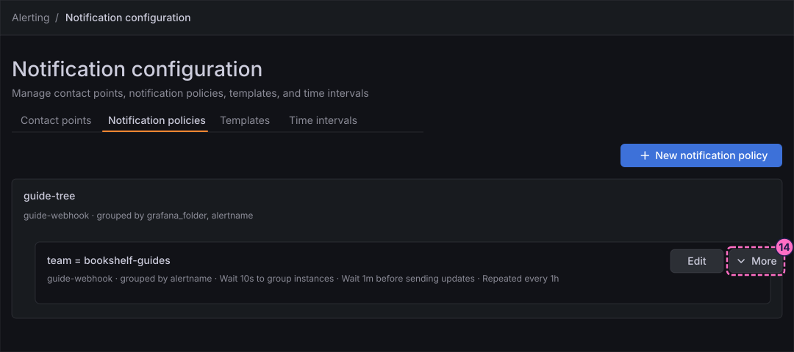
-
Choose Edit, pick
guide-quiet-hoursas a mute timing in the timing options of the route, and save the route. The labels of the route form were not read in the lab, so look for the field that lists the time intervals to mute.
Read the alert history
-
In the left navigation, click Alerting, then History.
-
Set End state to Alerting. The Start state filter and the labels filter work the same way.
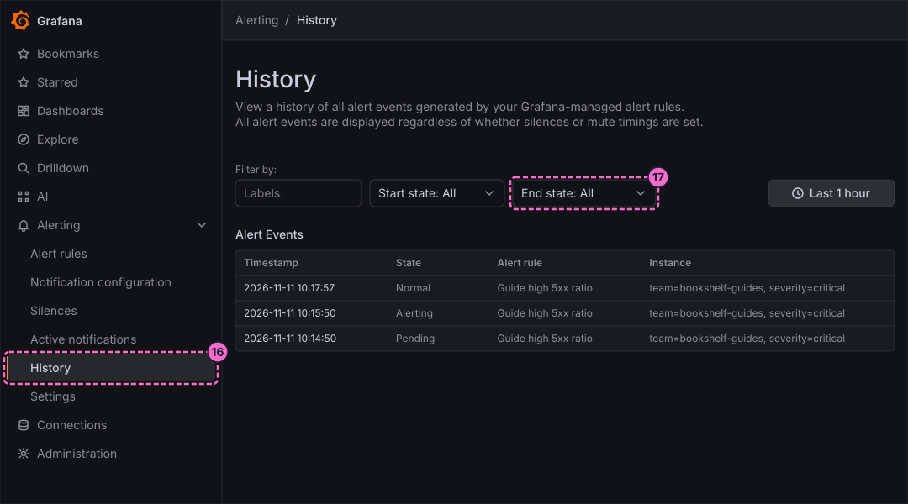
-
Read the table Alert Events: each row has a Timestamp, a State, the Alert rule and the Instance labels. The page lists every event whether or not a silence or a time interval applied, so your silenced alert is still there.
Show the alerts on the dashboard
-
Open Dashboards → Guides → Bookshelf (guides) and click Edit.
-
Click Add, click the Panel tile in the Add pane, and then Edit visualization, as in the first-dashboard guide.
-
In the right column, under Start without data, click the card Alert list.
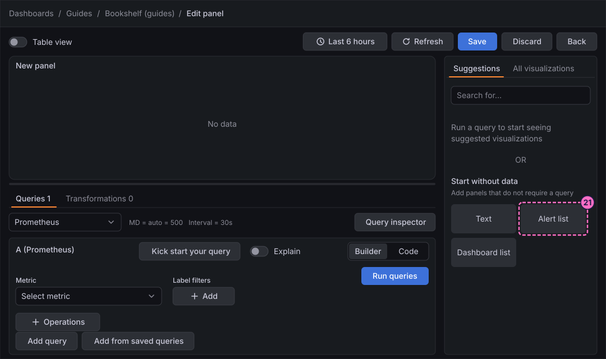
-
Under Panel options, type
Alerts (guides)in Title. -
Under Filter, type
Guidein Alert name, so that only your rules are listed. -
Under Alert state filter, tick Alerting / Firing and Pending.
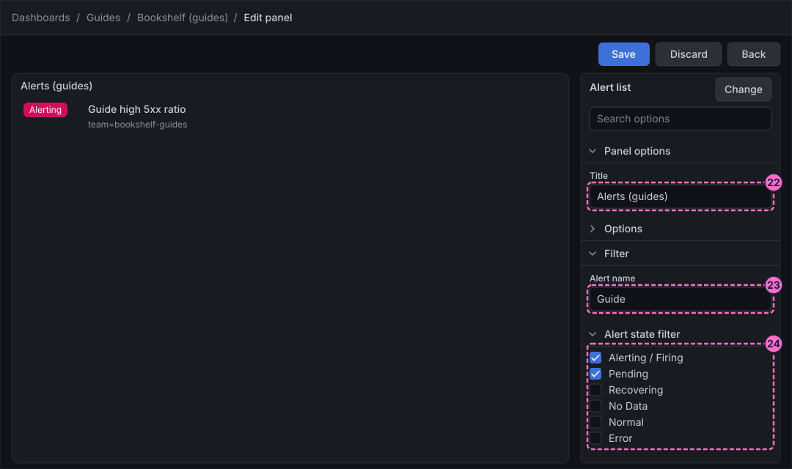
-
Click Save, Back, then Exit edit, and Save again if the dialog Unsaved changes appears, as in the first-dashboard guide.
Record the request rate
-
In Alerting → Alert rules, click More and choose New Grafana recording rule.
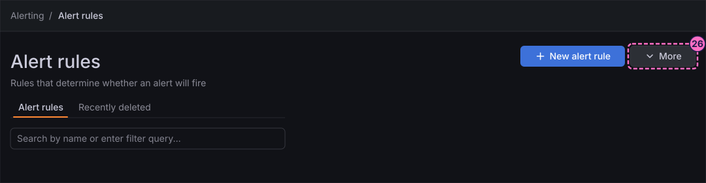
-
Type
Guide request rateas the name of the rule. -
Type
guide:http_server_requests:rate1mas the metric name. -
Choose the data source Prometheus and enter the query, as an instant query if the form offers the choice:
sum by (status) (rate(http_server_requests_seconds_count{application="bookshelf"}[1m])) -
Choose the folder
Guidesand the evaluation groupguide-eval. -
Click Save rule.
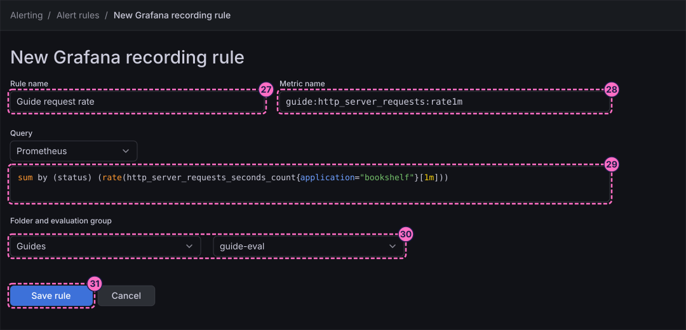
-
After a minute or two, open Explore with the data source Prometheus and run the recorded metric:
guide:http_server_requests:rate1m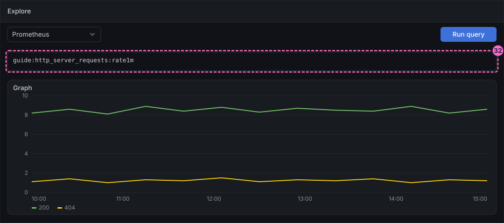
Check the result
-
Alerting → Silences lists the silence with your comment until it ends. To see the effect on notifications, restore normal traffic (
curl -X POST localhost:8090/mode/normal), wait until the rule is Normal, force the failure again and read the receiver withcurl localhost:8081/: the rule goes Pending and Firing again, and History records it, but no new entry with the path/guidearrives while the silence lasts. -
The same holds while the time of day is inside
guide-quiet-hours: the route does not send. Entries with the path/grafanastill arrive, because the provisioned rules use the provisioned tree. -
The dashboard shows the panel Alerts (guides) with the rule Guide high 5xx ratio while it is Alerting or Pending.
-
Explore returns one series per status for the metric
guide:http_server_requests:rate1m. The lab did not measure how long the first point takes; the rule evaluates every minute.
Restore normal traffic when you are done:
curl -X POST localhost:8090/mode/normalVariations
-
Open Alerting → Silences to create a silence from scratch, with your own matchers, instead of from an instance.
-
Change the time interval to recurring days (for example Saturday and Sunday) with Days of the week, as the provisioned interval
bookshelf-weekendsdoes. -
Switch the alert list panel to its Stat view mode in the options pane.
What can go wrong
| Symptom | Cause | Fix |
|---|---|---|
The instance has no Silence button |
The rule is not firing yet, so the Instances tab lists no alerting instance. |
Wait for the state Firing on the rule page; check the failure mode with |
The silence does not match the alert |
The matchers were edited, or the labels of the instance changed. |
Open the silence from the Silence button of the instance, so that the labels come prefilled. |
The time interval has no effect |
The window does not contain the current time in the chosen Location, or the interval is not attached to the route. |
Compare your clock in UTC with the window and check that the route lists |
The alert list panel is empty |
The Alert name filter does not match, or the state filter excludes the current state. |
Clear Alert name or tick more states, and press Refresh. |
The recorded metric does not appear in Explore |
The rule has not been evaluated yet, or the target data source does not accept the written samples. |
Wait two minutes and run the query again; check the evaluation state of the rule on the rule page. |
Clean up
Keep the time interval, the panel and the recording rule if you want to continue with the next guide. To remove the mute, edit the route again and clear the time interval, or delete guide-quiet-hours
from the Time intervals tab once no route uses it. Silences expire on their own after their duration. Restore normal traffic with curl -X POST localhost:8090/mode/normal.
To delete everything the lab stores, stop the profile with docker compose --profile grafana down -v.
Where to go next
-
Previous guide: Send notifications.
-
Next guide: Users, teams and folder permissions, which gives a team access to the folder Guides.
-
Reference: Silences, Mute Timings and Inhibition, Monitoring Alerts and State History and Recording Rules explain these features in full.